GAŠENJE IN RAVNANJE Z GASILNIKI
Vsak požar je najbolje začeti gasiti takoj, ko je ta še v začetni fazi, in se pri tem zavedati, da ne moremo toliko škodovati objektu, kakor mu lahko koristimo, saj vsak nadaljnji razvoj pomeni več gasilnega sredstva in več škode. Če želimo biti uspešni, se je pred gašenjem treba prepričati in se zavarovati. Gasimo vselej v smeri vetra (veter piha čim bolj v hrbet), to dosežemo tako, da pogledamo, kam potuje dim, zagotoviti si je treba primeren gasilnik in primerno količino (bolje dva hkrati kakor eden za drugim), treba se je zavedati lastne varnosti (da ni elektrike v bližini, če je se odmaknemo en meter do dva od vira električne napetosti, se približamo samo toliko, da nas ne peče od toplote, smo v nizki preži, opozorimo okolico na požar...).
1. Gasilnik prinesemo v bližino (ko začutimo toploto, smo preblizu – stopimo korak nazaj), med prenosom je priporočljivo gasilnike na prah en- do dvakrat obrniti na glavo in nazaj.
2. Postavimo gasilnik na tla, izvlečemo varovalko, ki preprečuje aktiviranje (varovalka rumene barve ali kovinska).
3. Primemo ročnik (cev) in ga usmerimo proti jedru požara.
4. Gasilnik dvignemo in začnemo gasiti tako, da se pomikamo proti požaru, za boljši učinek.
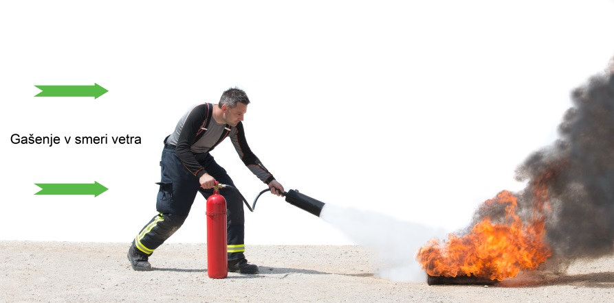
Slika 3: Gašenje z vetrom v hrbet
Ta postopek velja za vse tipe razen za gasilnik na prah z ampulo, kjer je med opisano točko 2 in 3 potrebna še aktivacija ampule in potisnega plina.
PRAKTIČNI NAPOTKI
Gasilniki na prah
Pogonski tlak je ca. 15 barov, zaradi česar je curek prahu lahko dolg do pet metrov in hkrati malce neprijeten. Zato začnemo gasiti iz oddaljenosti ca. tri metre, če je le mogoče, in se po potrebi približujemo. Tlak ob izstopu iz ročnika lahko lahke predmete (papir, plastika...) ali tekočine razmeče naokoli, požar lahko s tem razširimo. Gasilni prah se nanaša na gorečo površino in ne neposredno v žarišče. Primerna uporaba je predvsem zunaj, vsekakor pa je učinkovit tudi znotraj prostorov.
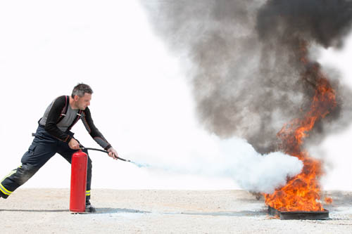
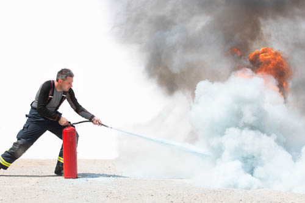
Slika 4 in 5: Prikaz gašenja z gasilnikom na prah
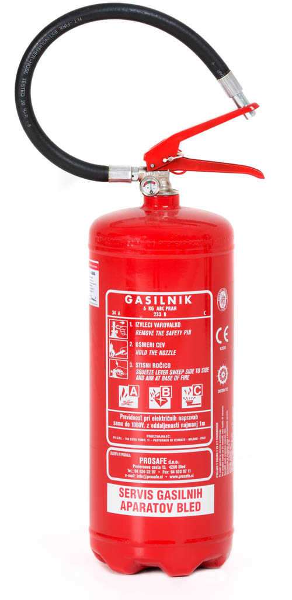
Slika 6: Gasilnik na stalni tlak (ima manometer in na cevi nima ročnika)
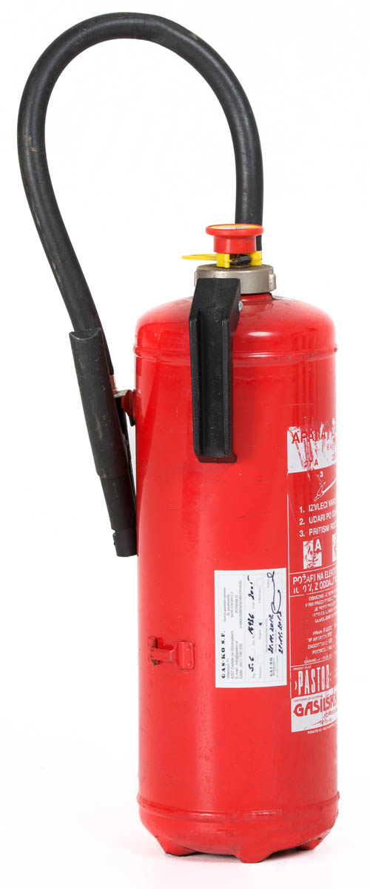
Slika 7: Gasilnik na ampulo (nima manometra in na cevi ima ročnika)
Gasilnik aktiviramo na sledeči način:
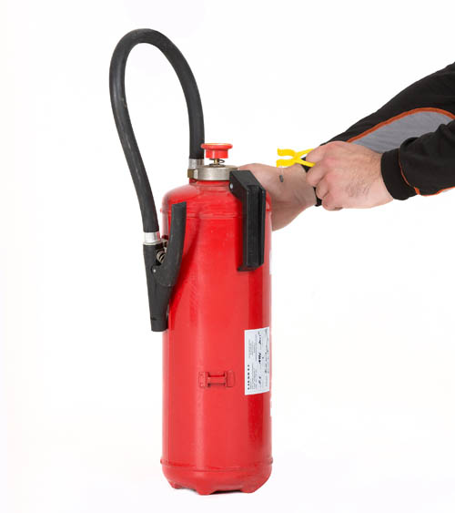
Slika 8: Izvlečemo varovalko
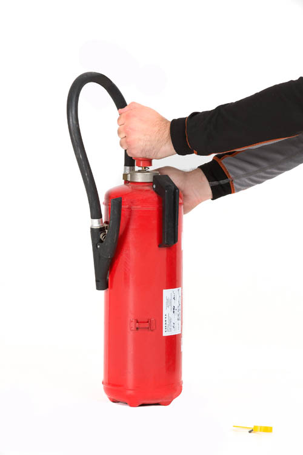
Slika 9: Udarimo po gumbu / ročki
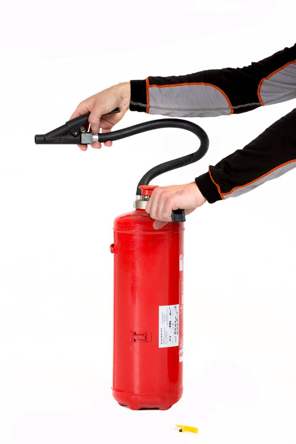
Slika 10: Stisnemo ročnik (na cevi), usmerimo v požar in gasimo v smeri cik-cak
Gasilnik na CO2
Plin je težji od zraka, zato slabše gasi predmete pod stropom. Ker deluje po principu izpodrivanja kisika, je primeren predvsem v notranjih prostorih, medtem ko zunaj obstaja velika verjetnost neuspešnega gašenja (predvsem ob prisotnosti vetra). Pri gašenju se je treba zelo približati požaru, da je učinek optimalen. Zaradi prehajanja iz tekočine (v tlačni posodi shranjen v obliki tekočine) v plin, se ta ohladi na –78 stopinj Celzija in lahko nastanejo omrzline, če uporabnik ravna z gasilnikom nepravilno (iz ročnika pogosto padajo kosi suhega ledu – sneg).
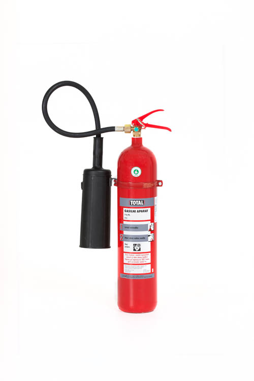
Slika 11: Gasilnik na CO2 (z ročnikom)
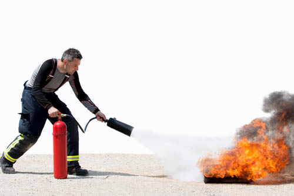
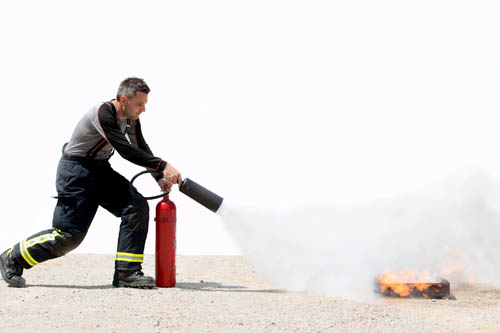
Slika 12 in 13: Prikaz gašenja z gasilnikom na prah
Gasilnik aktiviramo na sledeči način:
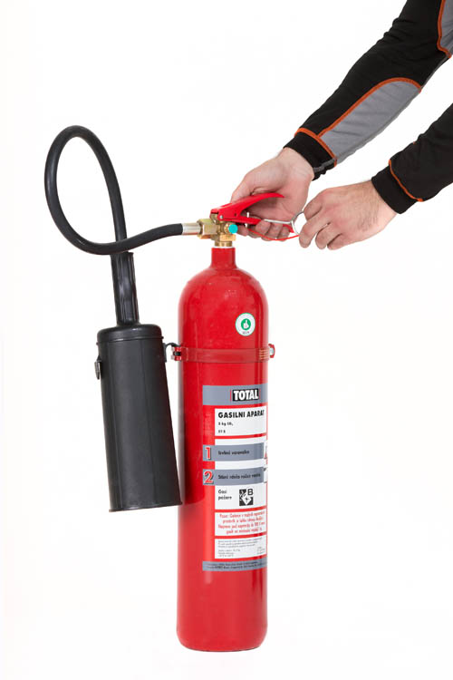
Slika 14: Izvlečemo varovalko
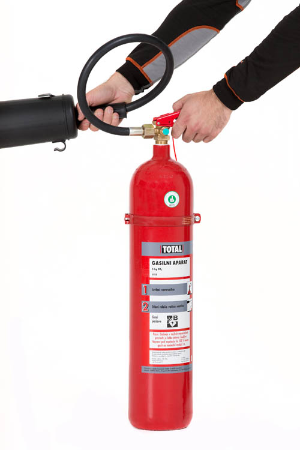
Slika 15: Stisnemo ročnik na gasilniku (moramo stalno držati), usmerimo ročnik v požar in gasimo v smeri cik-cak
Gasilnik na vodo ali peno
So zelo učinkoviti, ob pravilnem ravnanju je mogoče gašenje skoraj vseh vrst požarov. Njihova slaba lastnost je le ob gašenju naprav pod električno napetostjo. Kot za druge velja tudi tukaj pravilo oddaljenosti vsaj en meter pri gašenju do 1000V napetosti. Za vodo je priporočljivo dva do tri metre.
Gašenje maščob in mineralnih olj
Za gašenje maščob so predvideni gasilniki s posebnimi dodatki, ki preprečujejo reakcijo olja in vode. Nikakor se tovrstnih snovi ne sme gasiti z vodo. Voda zavre in povzroči ognjeno kroglo (kapljice pare se obdajo z oljem in zagorijo v obliki vzbuha). Takoj moramo preprečiti segrevanje tekočine (ugasnemo štedilnik). Če nimamo primernega gasilnika, gorečo maščobo najlažje pogasimo z mokro krpo ali še lažje s pokrovko, s katero preprosto pokrijemo gorečo posodo in počakamo, da se ohladi.
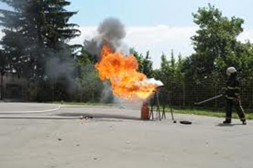
Slika 16: Gašenje olja z vodo
Zaključek
Vsak laik lahko uporabi gasilni aparat (pravilna izbira za snov, ki gori), četudi ga ne zna uporabljati, so navodila jasna in jih je mogoče prebrati v nekaj sekundah ter začeti gašenje. Če je posameznik vešč ravnanja z gasilnikom, lahko tudi z ne popolnoma primernim gasilnikom (za snov, ki gori) uspešno pogasi požar. Predlagamo, da si pobližje pogledate gasilnik in predvsem nalepko na njem, saj je zelo razumljivo napisano in orisano, kako pravilno aktiviramo gasilni aparat. Tudi ob požaru imamo deset sekund, da hitro pogledamo nalepko in gasilnik aktiviramo pravilno. Če znamo gasilnik aktivirati in pogasiti začetni požar, nam lahko to reši imetje ali celo naše življenje oziroma življenje koga drugega.
Gasilnik morajo po vsaki uporabi (tudi če je aktiviran zgolj eno sekundo) pregledati in ga servisirati strokovnjaki.